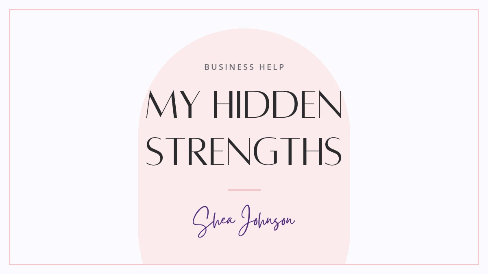
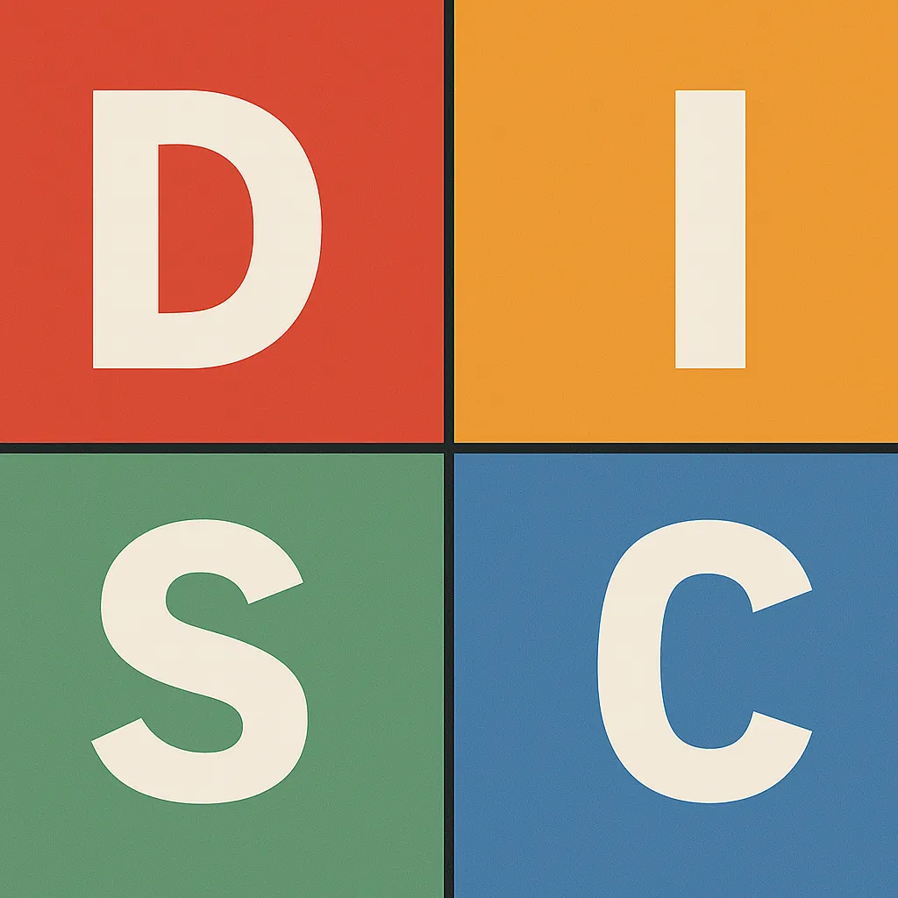

I always like to share the DISC Assessment with business owners.
And the reason why is because — just like many of them who don’t know about it — there was a time when I also didn’t know about it.
I remember the impact it had on me.
And I want to share that with you too.
Almost 2 to 3 years ago…
My mentor hired someone called a revenue generation specialist to coach me in my role as a nonprofit leader.
And she was amazing.
At first, it was tough.
But eventually, we settled our differences.
And today, we are really good friends.
I remember she recommended that I take something called a DISC Assessment.
It was to help assess how I would behave in a leadership role and within a team.
It’s almost like taking a personality test, but for the workplace and professional setting.
Back then…
The DISC assessment said I was a person who preferred to be behind the scenes — that I preferred to be busy with clerical and administrative work.
But underneath my results — although I was proud of that strength — the same DISC Assessment also revealed I was afraid to step into my true potential as a leader.
I knew I wanted it.
But didn’t really know how to go after it, especially with everything I’d been through in my life.
Very recently, I took that assessment again.
And I learned that I was actually scoring in some of the same areas that my mentor had scored in — which was very high in leadership.
Basically, my new DISC Assessment results revealed my growth.
So, who I was back then is not who I am today.
Today, I am more of what I need to be in order to achieve my goals than I have ever been.
And it comes from doing things like a DISC Assessment:
Learning my weaknesses.
Learning my strengths.
Learning what I’m great at.
And what needs to be improved for me to move forward in my dreams and goals.
I wanted to share this resource with you and encourage you to take a DISC Assessment and see where you are in the process of becoming a leader.
For business owners like myself, sometimes it’s hard for us to be the student.
Because we know what we’re really good at — that’s why we start our businesses.
We know we can charge for what we do and what we know.
But what if there’s still more to learn and more to improve?
So that areas where we fall short don’t eventually come back to bite us later?
I’m providing a link below for you to take a DISC Assessment through a platform I have a partnership with.
When you’re done taking your DISC Assessment, the results will automatically be delivered to you and so will an email containing a cheat sheet of my AI prompts to help you unlock the answers and full potential of your DISC results.
👉 Take the DISC Assessment & Receive your AI DISC PROMPTS Here
Disclosure: For links you click on and make a purchase, I may earn a commission at no extra cost to you. Thank you for supporting my content!
Ready to discover your leadership strengths?
👉 Take the DISC Assessment — See where you are in your growth journey
Want to explore more resources and work with me?
Special NoteThe DISC assessment you are taking is through a platform called “The Hire Talent”. I have a partnership with them that allows you to take this assessment for free.You will receive two emails once you finish the assessment, one from the hire talent and the other from me shortly after. My email contains the DISC prompts I promised earlier.Thank you for reading my blog and for your continuing support.-Shea
Growth starts with awareness.
Take the assessment.
See where you are.
Then decide where you want to go.
Best,
Shea ☺️
